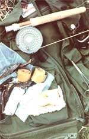

LEFT TO RIGHT: Jerk-ix easy to prepare, end the homemade variety is less costly than its store-bought equivalent ....
It can be dried in your oven ...as can fruit leather ...which is then cut into convenient little chunks ...A modern ""pemmican"" will provide energy ...though many folks will choose to omit the sugar coating.